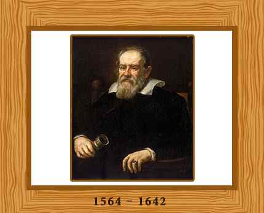

Some names in the history of inventions can never be forgotten as they bless us with their numerous creative inventions that have now become a need of every man. Among such great personalities one name that is always remembered is that of Galileo Galilei.
This renowned scientist was born on February 15, 1564 in Pisa. Galileo was an Italian physicist, mathematician, astronomer, philosopher, and flautist who played a vital role in the Scientific Revolution. This great man was the first to use a refracting telescope to make imperative astronomical discoveries. His accomplishments also include improvements to the telescope and support for Copernicanism. No doubt for this reason Galileo has been called the “father of modern observational astronomy, “father of modern physics,” and “the Father of Modern Science.” In praise of Galileo Stephen hawking said “Galileo, perhaps more than any other single person, was responsible for the birth of modern science.
Galileo started his career with the motion of uniformly accelerated objects, taught in nearly all high school and introductory college physics courses, as the subject of kinematics. Further coming to Galileo’s career path and his immense learning, in 1609 Galileo learned about the invention of the telescope in Holland. From the barest description he constructed a vastly superior model with his efficient observation.
As a professor of astronomy at University of Pisa, Galileo was required to teach the conventional theory of his time that the sun and all the planets revolved around the Earth. Later at University of Padua he was exposed to a new theory, proposed by Nicolaus Copernicus, that the Earth and all the other planets revolved around the sun. Galileo’s observations with his new telescope convinced him of the truth of Copernicus’s sun-centered or heliocentric theory. Galileo’s support for the heliocentric theory got him into trouble with the Roman Catholic Church in 1615. In February 1616, although he had been cleared of any offence, the Catholic Church nevertheless condemned heliocentrism as “false and contrary to Scripture”, and Galileo was warned to abandon his support for it which he promised to do. When he later defended his views in his most famous work, Dialogue Concerning the Two Chief World Systems, published in 1632, he was tried by the Inquisition, found “vehemently suspect of heresy,” forced to recant, and spent the rest of his life under house arrest. In 1633 the Inquisition convicted him of heresy and forced him to recant (publicly withdraw) his support of Copernicus.
They sentenced him to life imprisonment, but because of his advanced age allowed him serve his term under house arrest at his villa in Arcetri outside of Florence. Galileo also worked in applied science and technology, inventing an improved military compass and other instruments.
Therefore his originality as a scientist lay in his method of inquiry. First he reduced problems to a simple set of terms on the basis of everyday experience and common-sense logic. Then he analyzed and resolved them according to simple mathematical descriptions. The success with which he applied this technique to the analysis of motion opened the way for modern mathematical and experimental physics. Isaac Newton used one of Galileo’s mathematical descriptions, “The Law of Inertia,” as the foundation for his “First Law of Motion.”
Galileo became blind at the age of 72. His blindness has often been attributed to damage done to his eyes by telescopic observations he made. The truth is he was blinded by a combination of cataracts and glaucoma. Galileo died at Arcetri in 1642, the year Isaac Newton was born leaving behind his resourceful creations.
Go to top